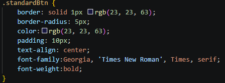
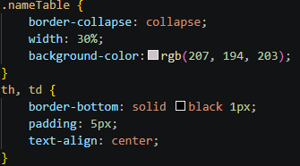
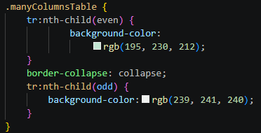
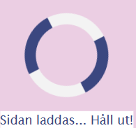
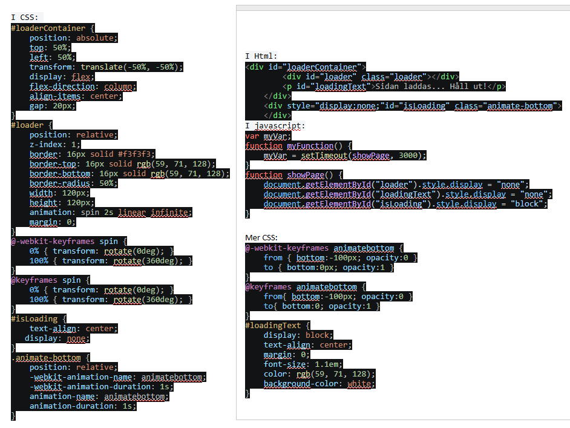

Kod för h1 rubrik i HTML <h1>Rubrik</h1>
I CSS filen används font-size: 3.25em;
Alla rubriker använder
font-family:'Franklin Gothic Medium', 'Arial Narrow', Arial, sans-serif;
Exempel h2 rubrik
Kod för h2 rubrik i HTML: <h2>Rubrik</h2>
I CSS filen används font-size:2.75em;
Exempel h3 rubrik
Kod för h3 i HTML <h3>Rubrik</h3>
I CSS filen används font-size:2.25em;
Exempel h4 rubrik
Kod för h4 rubrik i HTML <h4>Rubrik</h4>
I CSS filen används font-size: 1.75em;
All flytande brödtext
All vanlig brödtext ska ha dessa inställningar i HTML.
Kod exempel för den flytande brödtexten:
body { background-color:rgb(235, 206, 227);
font-family: 'Lucida Sans', 'Lucida Sans Regular',
'Lucida Grande', 'Lucida Sans Unicode', Geneva, Verdana, sans-serif;
font-size:16px;
margin-left: 5%; }
Knappar
Standardknappar ska ha följande utseende med kodexempel:

Knapparna ser ut så här för standardknapp, Skriv ut knapp.
Positiva gröna spara knappen, samt den röda negativa knappen.
Det som skiljer mellan Standard- och Skriva ut knappen är att Skriva ut inte har en font-weight.
Den gröna positiva knappen har samma inställningar som Standard men med en annan bakgrundsfärg:
background-color:rgb(170, 230, 200);
Den negativa knappen har samma inställningar som standard men andra färger som:
background-color:rgb(160, 25, 16);
color: white;
I HTML så kan man använda tagg <button> för att skapa knapp. Använd sedan addEventListener i JS för att koppla funktioner.
För framtiden kan animering för att visa reaktion när användare klickar på knapp är okej eller använda mörkare nyans vid klick.
Tabeller
Exempel på “längre tabell” lista i CSS kod där tabellen ska få linjer
bara horisontellt för att mjukare utseende med mindre linjer nedanför:
Förnamn
Efternamn
Alice
Andersson
Bob
Fyrkant
Kodexempel för lång tabell i CSS:

Kod i Html görs med taggen <table> <tr><td> </table>
Exempel på tabell med många kolumner nedan där vi använder varannan färgton
Namn
Hundras
Ålder
Färg
Försäkring
Data 1
Data 2
Data 3
Data 4
Data 5
Data 6
Data 7
Data 8
Data 9
Data 10
Data 11
Data 12
Data 13
Data 14
Data 15
Kodexempel i CSS:

Kod i Html görs med taggen <table> <tr><td> </table>
Kan då se ut så här. För mobila enheter så ska vi i framtiden ändra till dropdown meny, då det
tar mindre plats än en vanlig meny, samt ändra färgskala till en blåare färg som rgb(71, 71, 134);
med vit text #fffff; för kontrast.
Den är okej att byta till. Kod till CSS:
Javascript för att kunna klicka och toggla att öppna och stänga menyn när man trycker på meny
function myFunction2() {
document.getElementById("myDropdown").classList.toggle("show");
}
/* toggla mellan att visa o ta bort menyn visuellt */
window.onclick = function(event) {
if (!event.target.matches('.dropbtn')) {
var dropdowns = document.getElementsByClassName("dropdown-content");
var i;
for (i = 0; i < dropdowns.length; i++) {
var openDropdown = dropdowns[i];
if (openDropdown.classList.contains('show')) {
openDropdown.classList.remove('show');
} } } }
Meddelanden/Varningar
Exempel på hur meddelanden och varningar till användaren ska se ut
×
Sparat OK!
×
Varning! Stäng ruta
Viktigt att skriva med en text till användaren i dessa meddelanden och varningar.
För information så kan man använda blå ruta med passande text. För en varningsruta så får man ha röd ruta
med en passande text för det syftet. Sen kan användaren klicka på X för att stänga ned rutan.
Kod för detta blir i HTML:
Så här ser laddnings symbolen ut, men texten ska i framtiden ändras till bara Laddar...
I body tagg lägg till: <body onload="myFunction()" style="margin:0;">


Paneler
Finns 3 olika varianter på paneler. Den första neutrala har en ljusgrå bakgrund.
Det passar bra till en kalender eller anslagstavla. Bredden och höjd på panel
beror på innehållet och måste anpassas därefter.
Den neutrala panelen med sin ljusgråa bakgrundsfärg
Den positiva panelen med sin ljusgröna bakgrundsfärg
Den negativa panelen med sin röda bakgrundsfärg
Kod för att bygga upp en panel görs med hjälp av div-tagg i HTML <div>
Kod i CSS: